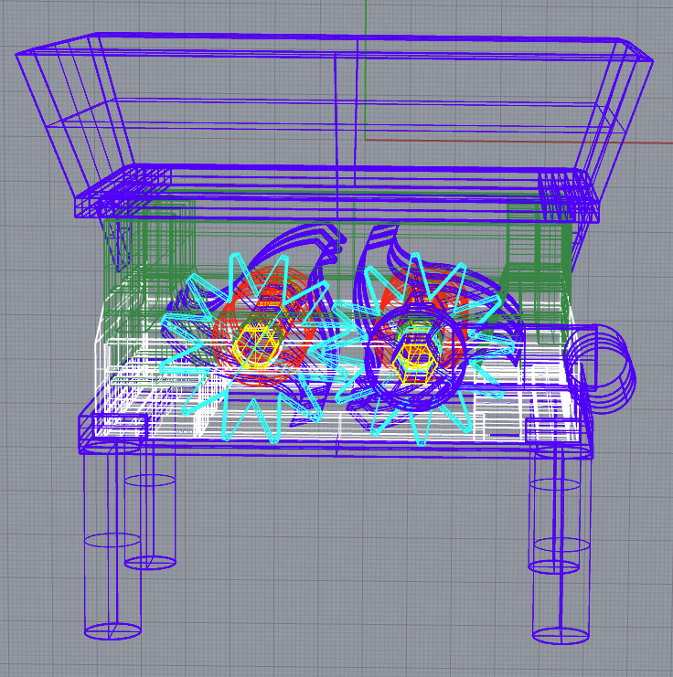
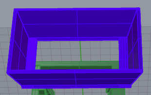

Assignment 7: Final Project Proposal
by Kefeng Wang in HCDE598
Concept
What I want to make is a shredder as a Christmas gift for my friend. The video shown below is where I found my insights. Ideally, the shredder should be able to cut paper into pieces easily.
3D Design in Rhino and Printing
My design has five major parts: a Funnel, an Upper Case, two sets of blades, and stand. In total, there are 20 pieces for the whole shredder. 5 blades are Laser Cut of the Acrylic board. Only one blade is 3D printed.
There are six spaces in the innards. 4 of them is created by molding and casting from the previous assignment. The rest two are also 3D printed.
The rest parts are all designed in Rhino. I also use Grasshopper to create gears.
You can download my STL file from here!
| Pieces Name | Images | techniques |
|---|---|---|
| Funnel |  | Rhino & 3D printing |
| Upper Case of innards | Rhino & 3D printing | |
| Left set of the Blades | Rhino, 3D printing, Modling(Spaceers), Laser Cutting(Blades), Grasshopper(Gear) | |
| Right set of the blades with hand lever | Rhino, 3D printing, Modling(Spaceers), Laser Cutting(Blades),Grasshopper(Gear) | |
| bottom Case of innards |  |
Rhino & 3D printing |
| Stand | Rhino & 3D printing |
There are two biggest challenges in the design process:
The first one is creating the blades. The shapes with three teeth are very hard to generate in Rhino. So I used a couple of curves and jointed them together to make my first tooth. Then I duplicate the first tooth and rotate twice with 120 degrees and 240 degrees to create the second and the third blades.

The second one is to make all parts move together. I just need to make a hexagon-shaped hole at the center of each piece I want to rotate together; then, I use the hexagonal cylinder to "combine" them together.
One rotation shaft attaches the gear on its end. Another rotation shaft also includes one gear in the middle. With the help of the set of gears, the two rotation shafts could move at the same pace. I followed an YouTube Video to create my gear. Here is the link for that Video.
You can down my gear from Here

The rest of part is very relatively easy. In the whole process, I used the following techniques: rhino, Grasshopper, 3D Printing, Laser Cutting, and Molding.
Revision
If you looked back on the project propossal, there is no joints for the upper case and bottom case. After I printed them out, it would slide way when I trying to move the handle. So I revised my model in Rhino and adding the small joints to help the upper case attach to the bottom one closely.
Here is all the documentation for assignment 8 !
you can go back to the HOME PAGE